Search The JARVEE Knowledge Base
The Instagram Like tool helps you search for photos based on a lot of different sources and automatically like them. This is a good marketing strategy if you want to get your brand in front of a new audience and to get more followers. If you have exceptional content, chances are that people in your niche will notice you and even follow your account.
How to use the Like tool?
To start using the Like tool on your Instagram profile, navigate to TOOLS page > click the Like action of the account or click More Tools > click Like tool from the left sub-menu.
Here you will notice 4 subtabs: Settings, Sources, Results and Extracted Posts tab
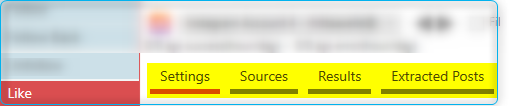
Settings tab
In the Settings tab, you will find 5 sections, the Run Timers, Like Limits, User Filters, Post Filters and After Like Actions. Basically, this is the tab where you can configure how the tool is going to execute auto-like actions as well as how the receiving posts are selected with respect to the filters and sources you will be using for the tool.
Run Timers section:

1. The wait between time before each new operation – this is the number of minutes that the tool will wait before starting a new operation
2. How many posts will be liked per operation – this is the number of posts the tool will process for each operation
3. The hours when the Like tool will execute actions.
4. There is an option to can add intervals as well as to randomize intervals.
5. You can add a random sleep – this will allow the tool to rest before starting a new operation when it has executed X follows
6. The days of the week when the tool will execute actions; you can rotate the days when the tool will operate
💡 On rotating days, Jarvee would pick the equivalent number of days you have initially selected; the selection is random and you have the option to exclude weekends in the variation in case you don’t want to “like” on Saturdays and Sundays.
7. You can increase actions per operation daily.
Like Limits section:

8. The maximum number of posts to like per day
9. The maximum number of posts to like per hour
💡 For the maximum number of posts to like per day and per hour, Jarvee will pick a random number between X-Y each day/hour and use it as the maximum number of likes per day/hour.
10. Enable contextual actions will make the like action look more natural. This option works both the Embedded Browser and the API. For the API, the option to ‘Enable API Full Emulation’ must be checked as well under Advanced Profile Settings.
📌 Click here to know more about how contextual actions work for the Like tool.
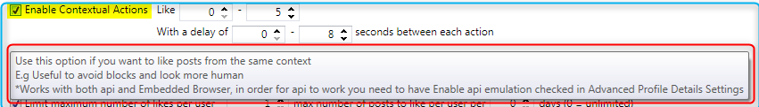
11. Keep a maximum number likes – this option lets you control the maximum number of posts you liked and start unliking older posts
12. Like users most recent posts – you can set the tool to like most recent X posts of the user
13. Limit maximum number of likes per user – you can set how many likes to give to each user for the entire time that the tool is running not for each operation
14. When this option is used, individual sources with a higher followback ratio will be favored. Both selection rank high followback ratio will count when a source is selected. It applies to Like by Hashtags, Like followers of target accounts, Like using GeoLocation and Like users that interacted with target accounts.
15. Use this option if you do not want to like posts straight away. With this option enabled, the post will be extracted and sent to the Extracted Posts tab and from there you can configure to send them to other tools and accounts.
💡 The posts sent from the Extracted Posts tab will be received in the Like/Comment posts of specific post URLs source of the specified accounts.
User Filters section:
This section of the tool is the deciding factor whether a user will receive a like action from you. If the user fails any of the filters you set, no ‘like’ will be received on the user’s posts.
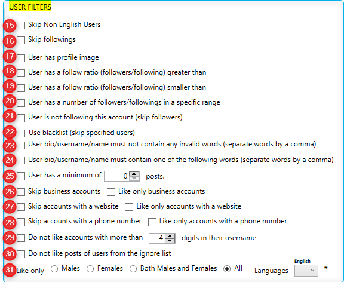
15. Skip Non-English Users; this will check the username/fullname, bio or post caption for Non-English characters or alphabets (Emojis is considered an English character)
16. This will skip your followings
17. Will check if the user has set a profile image
18 – 20 These filters are helpful for filtering ‘bot’ or fake accounts in terms of followers/followings the account has
21. You can set Jarvee to not like the posts of your followers
22. You can opt to never like any posts of a specific user by adding them to the Blacklist filter option
23 – 24. This will check users bio/username/name for invalid words and works that user must not contain/contain
25. Specify a minimum of post a user must have
26. You can skip or only like business accounts
27. Filter to skip or only like accounts with a website
28. Skip or only like accounts with phone numbers
29. Do not like accounts with more than x digits in their username
30. Do not like the post of users that were unfollowed by Jarvee that is added in the Ignore list
31. Like based on gender and language (need to configure and add names and language from Settings >> Social Platform >> Instagram >> Show male/female names)
Post Filters section:
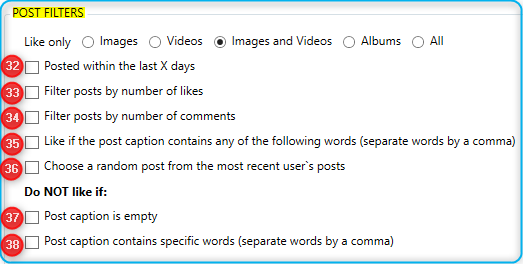
Before executing the Like action, Jarvee will first check if the scraped post meets the post filters you’ve indicated, this is pretty much the “quality section” of the tool.
💡 When finding posts to Like, you can select to scrape only Images, Videos, Images and Videos, Albums or All.
32. Indicate the age of the post you want to like
33. You can opt to only like posts that have a certain number of likes
34. Like only posts that have a particular number of comments
35. Like the post only if the post caption contains any of the specific words you want
36. You can select which of the most recent posts of the user will be liked
37. Set to not like if there is no post caption
38. Or avoid liking the post if the caption contains any of the words you want to deemed negative
After Like Actions section:
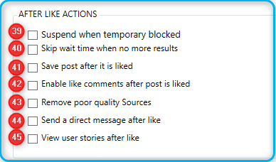
39. This will allow you to suspend the tool for x-y minutes in case you get a temporary block (action block with expiry date info).
40. Enable this option if you want the tool to start executing immediately again if no more results were found (to not wait the wait between operations time).
41. Enable this option is you want to save post after it is liked, you can also specify the Save percentage.
42. After liking the post, you can opt to like the comments as well.
43. Check this option if you want to automatically remove sources that do not result in wanted follow back ratio.
44. After liking, you can use this option to automatically send a direct message to that user.
45. After liking, you can also opt to view the stories of that user.
Like Sources tab
Select the method you want to use to find Instagram accounts to automatically like their posts, you can find users to like based on:
- Posts by Keywords: Jarvee will search in Instagram using those keywords and like posts appearing in the results that Instagram returned (For multiple keywords use ‘,’ as a separator, Ex. Cars, Stores, BMW)
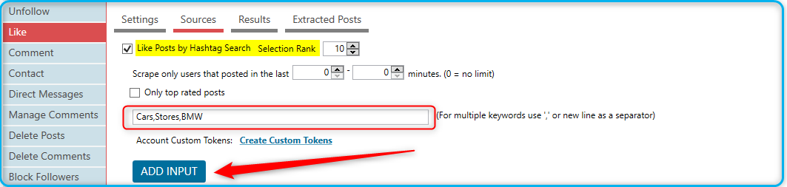
- Posts of Specific Users: Jarvee will like the posts of the usernames you put in this source, don’t forget to click “Add Usernames” button. 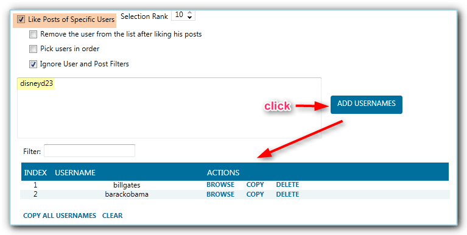
- Posts of Followers/Followings of other accounts: Jarvee will like posts of followers or followings of specific usernames you put in this source, you can choose whether you want it to like posts of followers or followings of that specific username. For this example, we used “billgates” and we clicked Add Account “Followers” as well as “Followings”; thus you see “followings/billgates” and “followers/billgates” in the table underneath

- Posts of Followers: Jarvee will like the posts of users following your account.
- Like posts of followers of own followers: Jarvee will like posts of followers of your own followers (A random account from your followers will be chosen).
- Latest Feed Posts: Jarvee will like the latest posts that appear on your Instagram account feed.
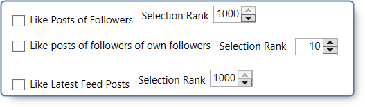
- Posts using Geo Location: Jarvee will like the posts of users that posted in any of the specified locations. Just type your desired location in the select locations field and you will see the related locations to the word you used and you can choose from them, you will see that they are added in the little box below it. 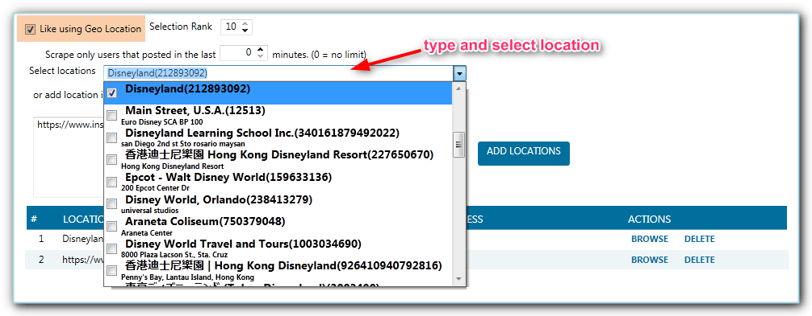
Or you can also add location IDs manually
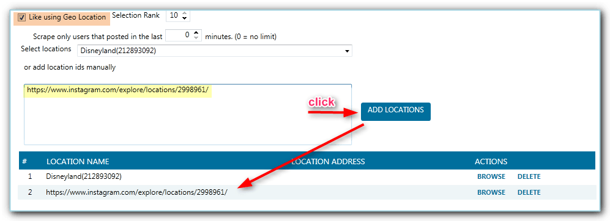
- Specific posts based on post url: Jarvee will like the posts based on their URLs that you add in this source (for example, https://www.instagram.com/p/BcNWGsBAhIj/) don’t forget to click “Add To Like List” button.
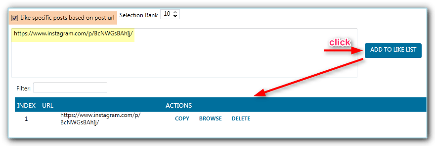
- Posts of Users that interacted with posts on target accounts: Jarvee will like posts of users that liked or commented posts of the usernames you provided in this source. Please don’t forget to click “Add” button.

- Posts of Users that interacted with posts on target posts: Jarvee will like the posts of users that liked or commented on specific posts that you specify using their URL (Ex. https://www.instagram.com/p/BcNWGsBAhIj/) don’t forget to click “Add” button.

- Like posts that tagged Specific Users: Jarvee will like the posts that tagged the specific users that you specify using their usernames.

- Unlike Specific posts: Jarvee will unlike the specific posts that you specify using their valid Instagram post URLs. (don’t forget to click ADD TO UNLIKE LIST after adding the URLs for it work).
- Like posts of own story viewers: Jarvee will like the posts of your story viewers.
- Like posts of users by username/fullname/bio:Jarvee will Like posts of users you specify according to keyword found in the users’ username/fullname/bio.
- Like Posts from Explore Page: Since the explore page is different for every user, Jarvee will randomly choose users from explore page which
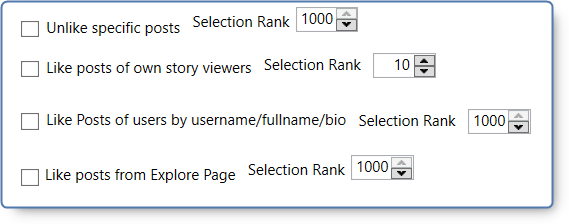
Results tab
In the Results tab you will see the accounts you automatically liked based on the source/s you used:

Extracted Posts tab
If you enabled the option ‘Send to extracted posts’ in the Like Settings tab > Like Limits section, then the scraped users will be sent to the Extracted Users tab.
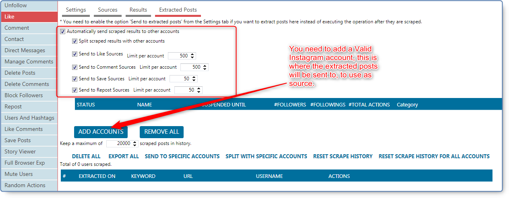
From here, you will see the record of all scraped posts and you can choose to send the users to specific accounts or split with specific accounts.
To send scraped results to own account that did the scrapping as well as to other accounts (click the ADD ACCOUNTS button to select the account/s that will receive the posts) in real-time, make sure to check the option ‘Automatically send scraped results to other accounts‘ before starting the Follow tool.
You can send the scraped posts to the Sources of the following tools:
- Split scraped results with other accounts: If you have multiple main accounts that will receive the extracted posts, check this option so that the scraped results will be split across all other accounts that you add as main accounts.
- Send to Like Sources: this will automatically send the scraped posts to “Like posts based on URL” source of the selected accounts.
- Send to Comment Sources: this will automatically send the scraped posts to “Comment on specific posts based on post URL” source of the selected accounts.
- Send to Save Sources: this will automatically send the scraped users to “Save specific posts based on post URL” source of the selected accounts.
- Send to Repost Sources: this will automatically send the scraped posts to “Repost specific posts based on post URL” source of the selected accounts.